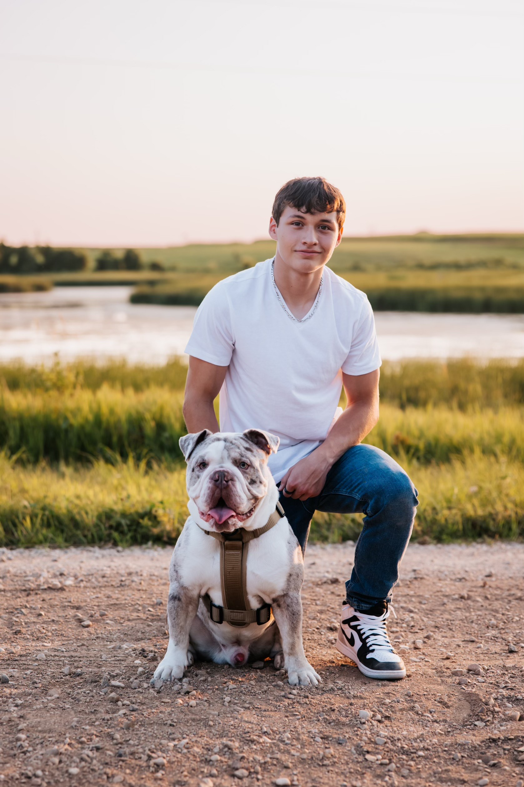
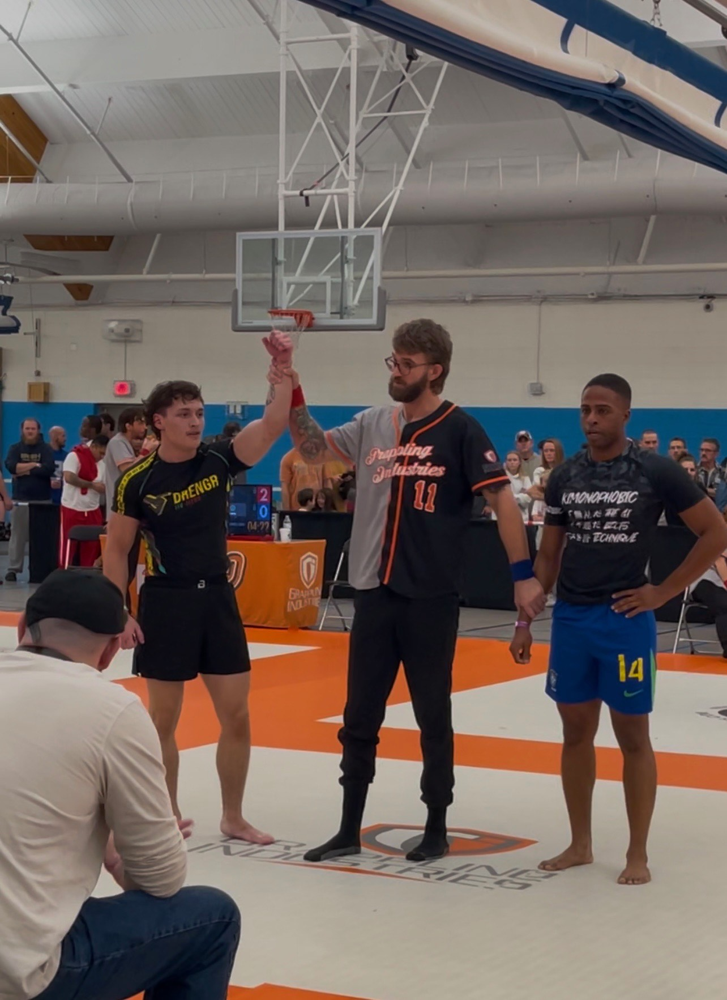

Welcome to My Website
Exploring Technology & Creativity

About Me
I am a sophomore at UMD majoring in Entrepreneurship. Below are two of my hobbies. Use the header above to navigate the site.
Learn More

Jiu-Jitsu
My first hobby is Jiu-Jitsu. I practice three times a week and even started the Jiu-Jitsu Club at UMD!

Concerts
My second hobby is going to concerts. I love seeing music live — it connects me to the artists.